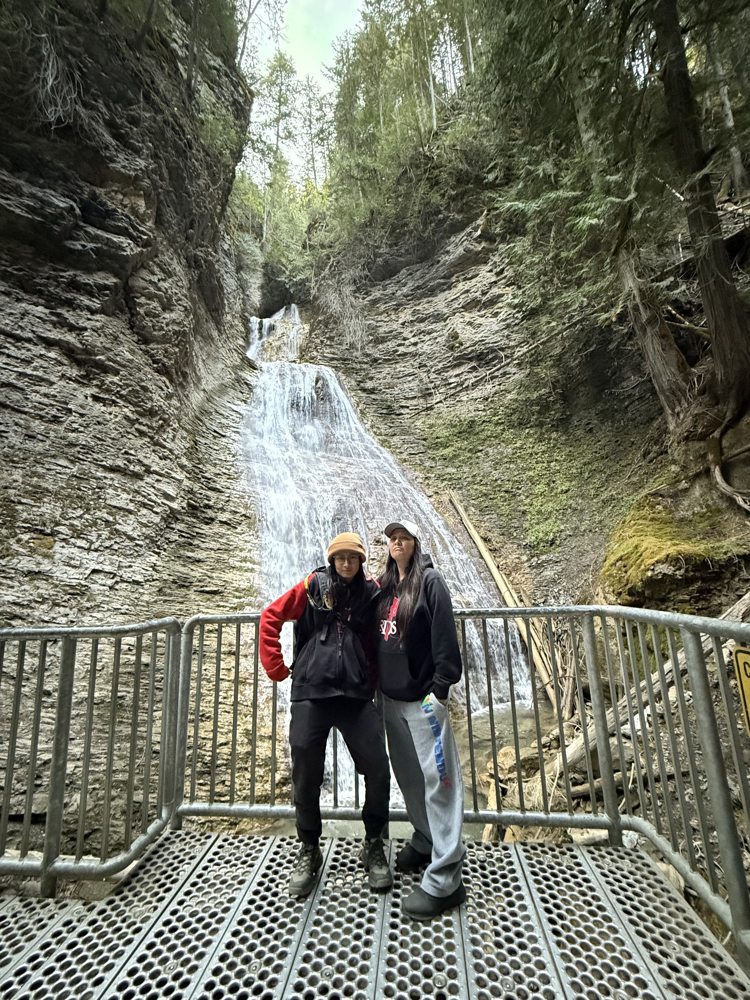

This a blog about some of my adventure last some!
Hello, I'm Kirb! I love sharing my experiences with others.
Concerts
Powows & Culture
Nature
Adventures I went on in Kelowna.
Some of the lakes and rivers I've explored.
